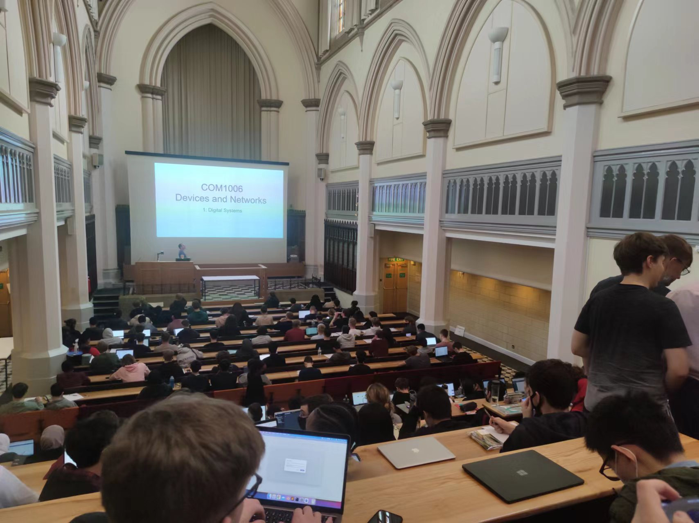
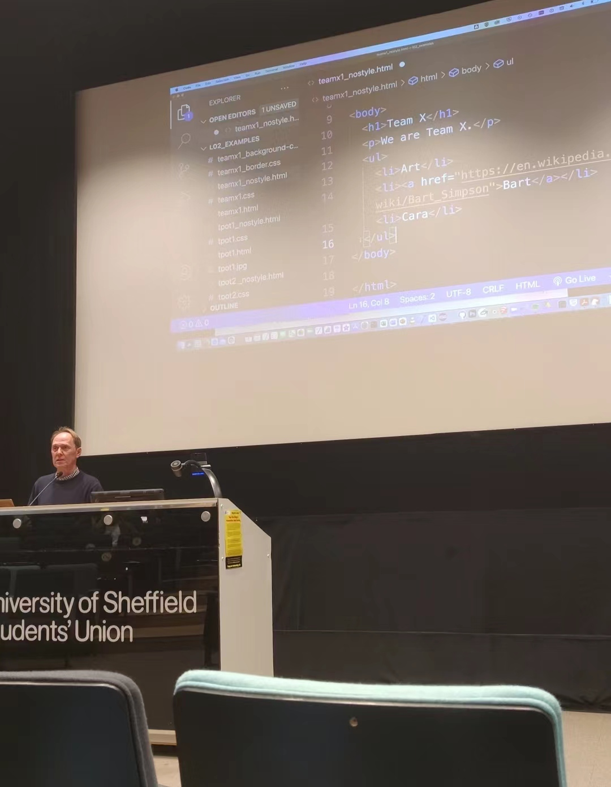

This module provides an introduction to Artificial Intelligence, and to key concepts and problems in the field,
such as whether a computer is capable of understanding, and whether humans should themselves be viewed as machines.
The module also has a more practical component that introduces algorithms and data structures for AI problem solving through practical programming examples,
as well as hands-on experience with simple programming of robots.
Click here for more information
COM1006

Device and Network
The module consists of two parts. In the first, important elements of computer architecture are covered including digital logic,
computer arithmetic and instruction set architecture. The approach in the module is to show how the basic elements of a computer are constructed
and combined to give sophisticated architectures that support accelerated performance via cache memory and pipelining.
Click here for more information
COM1008

Web and IT
The Web and the Internet are now pervasive in modern life, providing an information resource, and promoting novel,
interactive solutions to computing-related activities. The main focus of the module is on practical use of HTML,
CSS and JavaScript in front-end development of interactive websites.
Click here for more information